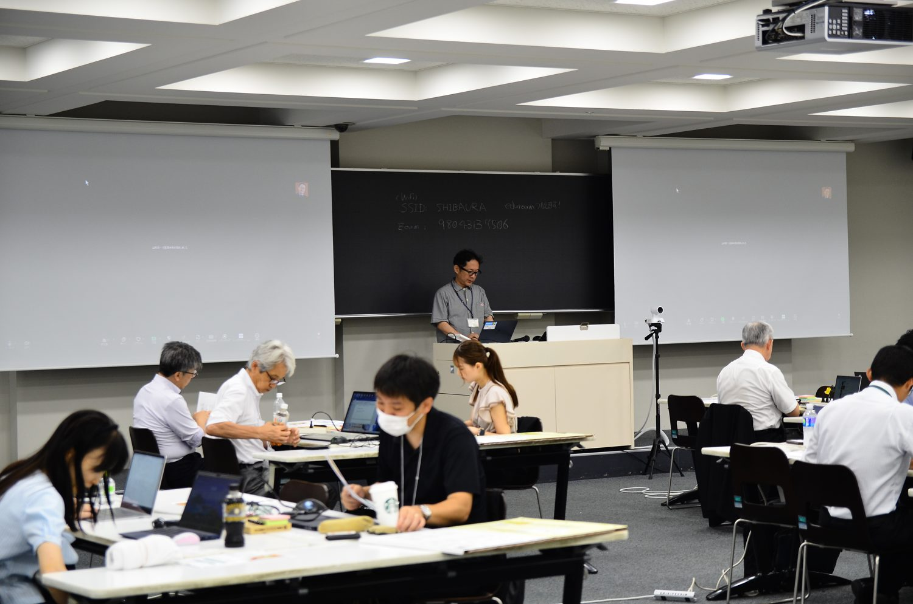
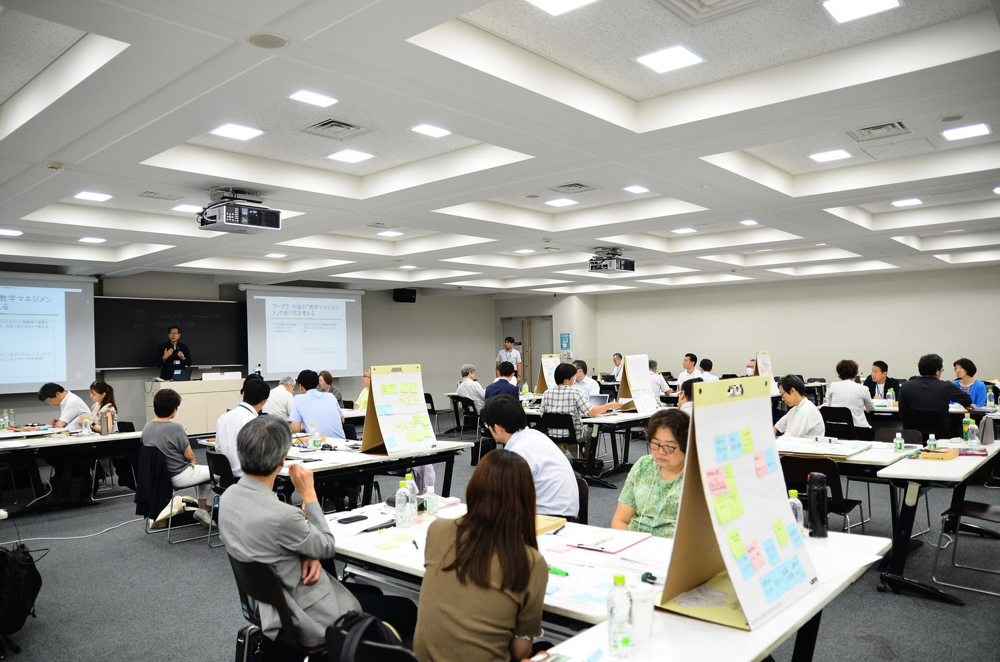
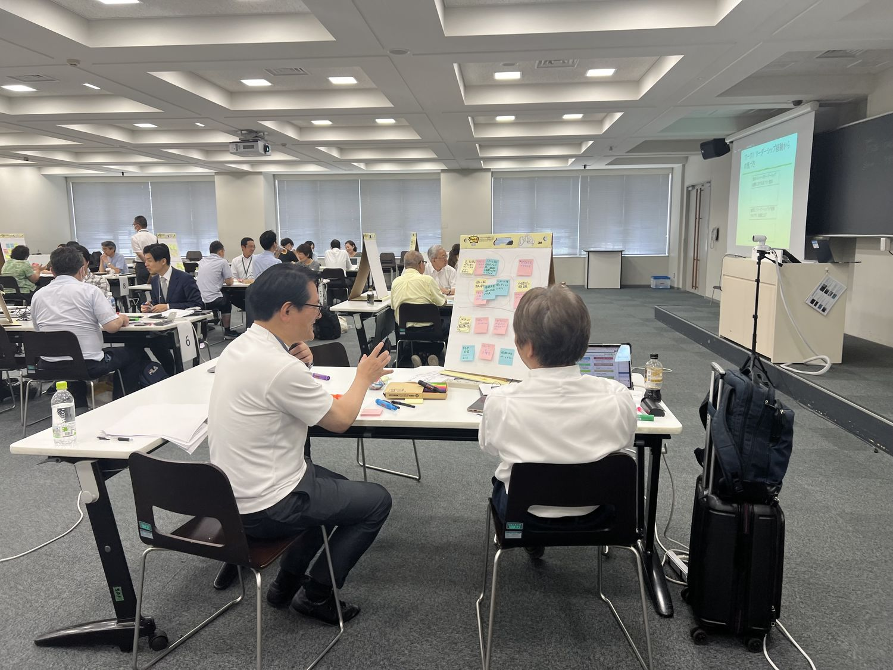

学長を支えるミドル教職員が、大学を越えた交流を行う中で、新たな変革につながるリーダーシップを高め、全学的な教学マネジメント体制に必要な考え方やスキルを身につける研修です。到達目標は、ミドル教員に求められる役割と知識・スキルを理解し実践できること、自らのリーダーシップ像とマネジメント手法についてイメージを持つこと、参加者同士が大学の枠を越えて相談しあえる関係を築くことの3点です。



| 日時 | 2024年7月21日（日） 10:00〜16:30 |
|---|---|
| 会場 | 芝浦工業大学 豊洲キャンパス |
| 定員 | 40名 |
| 参加費 | 1,000円 |
| 対象 | 副学長、学生部長、学部長・学科長、センター長、事務局等のミドル教職員（それ以外の教職員も参加可） |
| 主催 | 大学リーダーシップ研究会 |
| 共催 | 理工学教育共同利用拠点（芝浦工業大学 教育イノベーション推進センター） |
| 参加者 | 約40名（2日目の研修のみ。統合データでは第5回に通算） |
山本は、ミドル教員に求められる役割を「リーダーシップ」（ビジョンを構想し変革を起こす力）と「マネジメント」（新たな取り組みを制度化しPDCAを定着させる役割）の2局面から捉えるフレームワークを提示し、コッターの変革の8ステップを解説しました。リーダーシップは役職に依存せず、専任講師や若手教員でも発揮できることを強調しました。
吉村からはリメディアル教育の導入、「人間力育成センター」の設立、外部評価と外圧の活用など日本文理大学での実践を、榊原先生からは「自己評価アンケート」「スコット制度」「SITポートフォリオ」など芝浦工業大学の学生参画の取り組みを紹介いただきました。グループワークでは「権限なきリーダーシップ」「ミドル教員の役割の認識」「教職員協働」をテーマに議論しました。
本研究会はJSPS科研費 基盤研究(C)「教学マネジメントにおける学部長等のミドルリーダーシップ研究」（研究代表者：山本啓一）の助成を受けて開催しました。